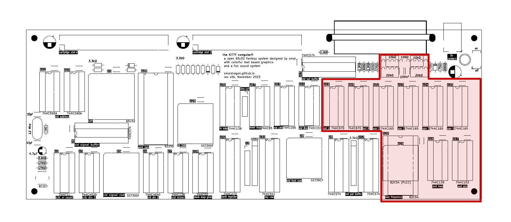
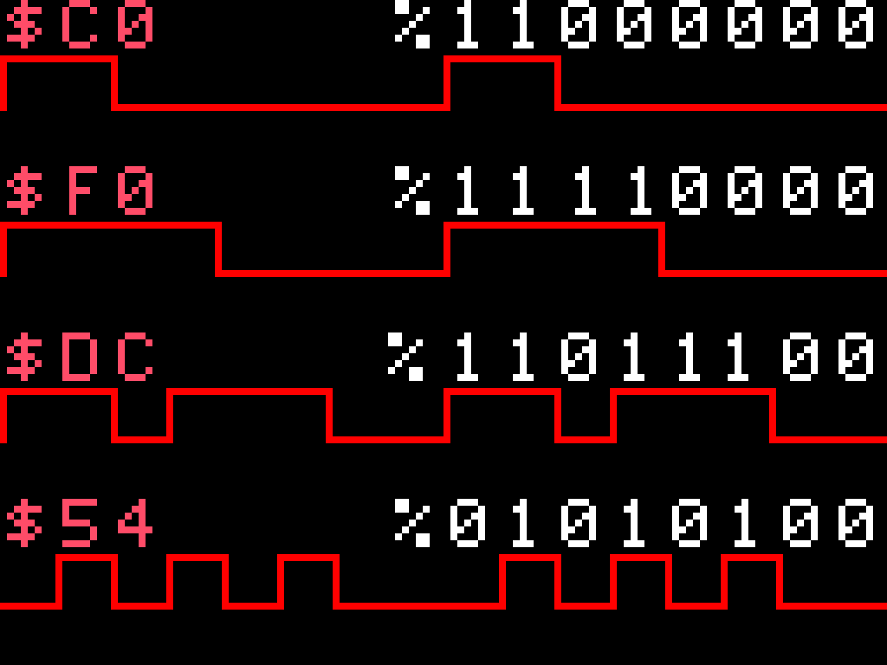

Audio System

| Address | Mode | Description | Format |
|---|---|---|---|
$70E0 |
R/W | Channel 1 Frequency | %cccc_cccc counter value |
$70E0 |
R/W | Channel 2 Frequency | %cccc_cccc counter value |
$70E0 |
R/W | Channel 3 Frequency | %cccc_cccc counter value |
$70E3 |
R/W | Frequency Control Register | %ssffmmmd (see frequency section) |
$70F0 |
W | Channel 1 Volume | %llll_rrrr left and right volume |
$70F1 |
W | Channel 2 Volume | %llll_rrrr left and right volume |
$70F2 |
W | Channel 3 Volume | %llll_rrrr left and right volume |
$70F3 |
W | Channel 4 Volume | %llll_rrrr left and right volume |
$70F4 |
W | Channel 1 Waveform | %wwww_wwww 8x1 waveform |
$70F5 |
W | Channel 2 Waveform | %wwww_wwww 8x1 waveform |
$70F6 |
W | Channel 3 Waveform | %wwww_wwww 8x1 waveform |
$70F7 |
W | Channel 4 Waveform | %wwww_wwww 8x1 waveform |
The KITTY provides a custom and unique sound system capable of generating chiptune music and sound effects. It is a wavetable synth (using a measly 8x1 resolution), with stereo volume control (4bit+4bit), and 4 sound channels (3 melodic and 1 percursive).
Setting the volume
The volume registers ($70F0-$70F3) allow you to set the current volume of each channel for both the left and right audio speakers.
Volume is defined by a writing single byte to the register, where the upper nibble sets the volume for the left speaker and the lower nibble the right channel. By writing different volume values on every frame the programmer can achieve smooth volume envelopes and panning effects. For example, the value $F8 would output a wave at max value on the left speaker and at half volume on the right.
In hardware 2 74hc670 4x4bit registers hold the left and right volumes of each channel, and are each connected to one of the two left/right audio DACs.
Setting a Waveform
The waveform registers ($70F4-$70F7) allow you to set the "timbre" to be used by each channel.
The waveform is defined by writing a single byte to the register, where each bit is interpreted as either a low (0) or high (1) on the waveform. For example, writing the value $F0 (%11110000) would create a simple square wave, while $C0 (%11000000) would generate a 25% duty pulse wave. By playing around with values its possible to make a wide array of interesting sounds:

In hardware 4 74hc165 shift-registers hold each waveform and are clocked in a self-feeding fashion in order to produce a note.
Setting the Frequency (Channels 1-3)
The frequency of the melodic channels (1-3) are controlled by a 82c54 triple timer addressable at $70E0-$70E3, this is a chip also found in the original IBM PC, where it is used to control its beeper (along with other non-sound functions). Its programming is a bit more complex compared to the other sound registers, but I will try and explain it here as best I can.
Before setting the frequency for any of the melodic channels, one must first write to the frequency control register ($70E3), to configure the action to perform (this must be done whenever you want to set a new frequency):
7 bit 0
---- ----
SSFFMMMD
| | | |
| | | |- decimal:
| | | 0: binary; 1: binary coded decimal
| | |
| | |- mode:
| | 000: interrupt on terminal count
| | 001: hardware one-shot
| | 010: rate generator
| | 011: square wave
| | 100: software strobe
| | 101: hardware strobe
| |
| |- format:
| 00: latch counter value, 01: r/w low byte, 10: r/w high byte, 11 r/w low then high bytes
|
---- Register Selection (0-3)
Most of these options are not useful for our purpose, typically the configuration used will be format: 11 (16-bit r/w), mode: 010 (rate generator), decimal: 0 (binary mode), or %xx110100 ($34 + $xx), where the top 2 bits are the register to operate on.
The final frequency of each channel is then derived from the division of a 3Mhz base clock by the counter's 16-bit value, divided by the length of the wavetable (8 steps):
frequency = 3Mhz / counter n / 8
Example:
# Setting a frequency for channel 1 (CapyASM syntax)
# first set the control register, for channel 0
lda %00 + $34
sta [$70E3]
# now write a new frequency value ($9340)
lda $40
sta [$70E0]
lda $93
sta [$70E0]
NOTE: A counter value of 0 is equivalent to 65536, while a counter value of 1 is illegal and should not be used.
The Percussive Channel (channel 4)
Unlike the first 3 "melodic" channels, channel 4 lacks frequency control, and instead uses a fixed frequency of 50hz, which is synchronized with the video circuit.
By carefully writing new wavetable values to this register once per frame (when the screen IRQ is called), it is thus possible to generate simple percussive sounds like white noise and drums.